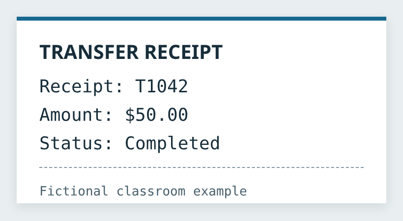
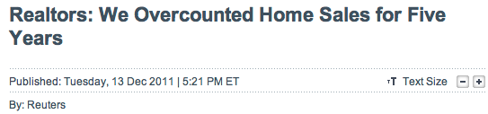
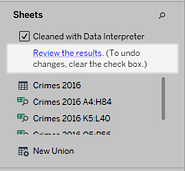
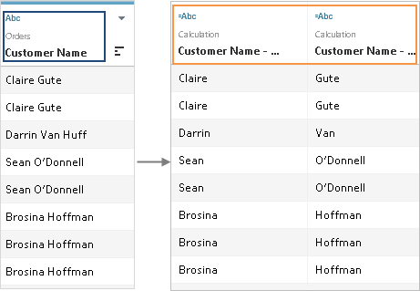
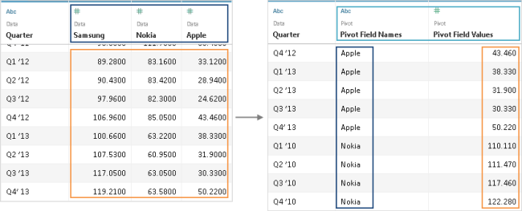
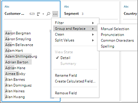

Clean
Values, types and units have been checked; confirmed duplicate copies are handled.
IA342 · Week 6 · Dr. Xuebin Wei
Prepare the data before making the chart.
Why data quality matters · How cleaning changes the result · How to build a Tableau Prep flow
In class: clean Diamonds together. In the lab: prepare house data and build a dashboard from three worksheets.
A calculation can run correctly and still answer the wrong question.
Garbage In, Garbage Out. A sophisticated model or polished dashboard does not make unreliable input trustworthy.
Raw sources → stored data → prepared information → a useful visual answer.
This week focuses on the middle of the pipeline: turn raw records into data that a visualization can use.
The same transfer can arrive as a table row, a JSON record or an image.
Rows + named columns
| ID | Amount | Status |
|---|---|---|
| T1042 | 50.00 | Completed |
| T1043 | 25.00 | Pending |
You can filter Status and sum Amount directly.
Example: a transaction table in a relational database.
Keys + values + nesting
{
"id": "T1042",
"amount": 50.00,
"status": "Completed",
"tags": ["mobile"]
}Keys describe the values. Optional or nested fields can vary between records.
Example: an API response in JSON.
Image, video, audio or prose

This PNG looks readable to us, but its amount is not a numeric database field.
Optional · needs internet
The same event can be represented in different ways. A video may have structured metadata; its visual and audio content is still unstructured for table-based analysis.
Choose storage for the data’s structure and the work you need to do.
Structured records
Accounts, payments and transactions
Semi-structured records
JSON events and nested documents
Structured, semi-structured, unstructured
CSV, JSON, images, audio and video
Prepared analytical tables
Integrated history and reporting data
Typical uses, not exclusive rules: a CSV or JSON file can also land in object storage first. A warehouse is itself a database system; many warehouses use relational tables and SQL.
Serve many customers quickly without leaving a transfer half-finished.
A bank must handle many simultaneous short reads and writes: check a balance, post a deposit, or transfer money. Related tables and transactions keep those operations consistent.
Keep day-to-day transactions separate from broad questions about the whole business.
Different workload: fewer analytical users in this example, but each query may scan or summarize a large history. User count is not the definition.
Online Transaction Processing: record the day-to-day business activity.
Typical home: an operational relational database. Many short reads, inserts and updates support daily business; normalized related tables reduce unnecessary repetition.
A multi-year analytical question may still require joining and summarizing many operational records.
Online Analytical Processing: summarize and explore the activity.
Typical home: a data warehouse. Analytical queries group, filter and aggregate many records. Cubes and analytical tables organize the data for reporting.
A correctly drawn chart can still summarize incorrect records.
The error is in the data or the cleaning decision—not in how the bars or averages are drawn.
Reuters / CNBC · December 13, 2011

| Published estimate | Number |
|---|---|
| Before rebenchmarking | 4,908,000 |
| Revised estimate | 4,190,000 |
718,000 fewer estimated sales, about 14.6%. This revision included more than just duplicate removal. These are revised counts, not a measured dollar loss.
September 23, 1999 · A mismatch between English and metric units
Reported spacecraft value
(1999 U.S. dollars)
The mission was lost on arrival at Mars.
The amount was reported for the spacecraft, not the entire Mars exploration program.
Thruster impulse data were supplied in pound-force seconds (lbf·s). Navigation software expected newton-seconds (N·s).
The values were used without the required conversion, so the effects of small thruster firings were underestimated.
The orbiter passed too close to Mars, and contact was lost. NASA also identified failures in validation and communication.
Check units before combining data. A valid number can have the wrong meaning when its unit is misinterpreted.
Standardize equivalent city and state names before grouping.
Similar names do not prove that two records describe one person.
| Customer Name | Address | Phone | |
|---|---|---|---|
| John Smith | 123 Lovely Lane | (513) 456-7890 | jsmith@hotmail.com |
| J Smith Jr. | 123 Lovely Lane | (513) 602-1234 | jsmith@hotmail.com |
| John Smith | 123 Lovely Lane #2 | (513) 602-1234 | coolguy@gmail.com |
Possible matches: two rows share an email address; two share a phone number.
Possible differences: “Jr.” and apartment “#2” may describe another person or household.
Before a reactivation campaign, would you contact three customers or fewer? The table alone does not settle their identity.
The danger of using an editable Excel file as an operational database.
Excel: one paste can overwrite the wrong cells. A database-backed application: controlled forms, permissions and validation can reduce direct cell-editing risks.
A database still accepts a wrong but valid number unless an appropriate business rule catches it.
An Excel column can mix numbers, text and dates without a fixed field type.
| Excel cell | Stored value | Data type |
|---|---|---|
| D2 | 1302 | Number |
| D3 | not recorded | Text |
| D4 | (empty) | Blank |
A field name such as Price does not enforce numeric values in every cell. Importing this column may produce text, nulls or failed calculations.
| Intended identifier | Possible Excel result |
|---|---|
00123 | 123 |
SEPT2 | 2-Sep |
Choose Text before importing identifiers. Inspect conversion settings and compare the imported values with the source.
Database contrast: a declared field type constrains what can be stored. Excel formatting and a CSV header are not database schemas.
Excel’s automatic type conversion can alter a research identifier.
| Gene identifier | Unwanted conversion |
|---|---|
| SEPT2 | 2-Sep |
| MARCH1 | 1-Mar |
| 2310009E13 | 2.31E+13 |
A later lookup using the original identifier can fail even though the spreadsheet still opens.
704 of 3,597 papers containing the screened Excel gene lists had confirmed gene-name errors.
Study scope: supplementary files from 18 journals, papers published during 2005–2015. This is not a rate for all research or every current Excel version.
Recovery: compare against the original source and re-import. Merely changing the corrupted cell back to Text may not restore the identifier.
A row, worksheet or saved file can disappear without protecting its related records.
Saving over the only good copy can leave the wrong version as the working file. Recovery depends on available Undo, version history or backups.
Configured constraints can block invalid deletion. Transactions and configured backups support recovery; a database is not automatically immune to mistakes.
Excel version history is available with supported OneDrive/SharePoint storage. The risk is using an uncontrolled file as the system of record.
Clean · Relevant · Trusted · Usable
Values, types and units have been checked; confirmed duplicate copies are handled.
The fields, population and time period match the question you are asking.
The source and transformations are known; the result can be checked against evidence.
The prepared structure works for the intended analysis and can be regenerated.
“Clean” is not enough when the data describes the wrong population, time period or question.
Extract → Transform → Load
ETL is a repeatable preparation process—not just opening a file. It separates the source, the transformations and the destination.
Read the required source data while preserving where it came from.
In our exercise: connect to the two supplied Diamonds CSV files. Do not overwrite the raw inputs.
Extraction obtains the data. It does not, by itself, prove that the values are correct or comparable.
Clean, combine, calculate and summarize—with a checkable result for each operation.
" gia "→GIATrim spaces, then make uppercase. Check units and missing-value codes.
Union appends batches. Join adds related fields by a matching key.
Price per carat = price ÷ weight. Validate the denominator first.
For example, sum three sales for one month. The detail becomes a summary.
Choose transformations for the analysis. A filter changes which records remain; aggregation changes what one output row represents.
An analytical workflow needs a usable destination, not just a saved design.
In our exercise: run the flow to produce a published clean data source, then connect the workbook to it.
Saving a flow records the process. Running the output creates or updates the prepared data.
Dimensions describe and organize the records.
| Field | Example | Role in a view |
|---|---|---|
| Category | Shoes | Group records |
| Date | 2/1/12 | Group or filter time |
| OrderID | 1 | Identify an order |
| AgentName | Pay, Freda | Compare agents |
Dimensions are not limited to text. Dates and numeric IDs can also be dimensions.
Measures provide the quantities and amounts to analyze.
| Item | Unit price | Quantity | Sales |
|---|---|---|---|
| Runners | 79.95 | 1 | 79.95 |
| Kneehighs | 10.98 | 3 | 32.94 |
Sales = Price × Quantity
For these two rows: total sales = 112.89, not the sum of unit prices.
“Average price” and “total sales” are different questions, even when they use the same records.
Inspect the sales records, then reveal the two field roles.
Change the dimension or aggregation and read what each bar means.
Source update → new query → updated dashboard result.
Live: the dashboard sends queries to the original database. Committed changes can appear when Tableau queries it again; view refresh and caching policies affect when that happens.
Direct connection does not mean constant push updates. Query cost and response time depend on the source and workload.
Source update ≠ extract refresh ≠ refreshing the displayed view.
Extract: Tableau queries a separate .hyper copy optimized for analysis. The original database is not queried for each view interaction, which can improve speed and reduce source workload.
Refresh the extract manually or on a supported schedule. Refreshing only the dashboard still reads the same copy. Actual performance depends on the data and query.
Build a repeatable data-cleaning process from input to output.
Flow pane: connected input, cleaning and output steps.
Profile / data grid: the current values and distributions.
Changes pane: the transformations applied in a step.
Our course uses Prep on the web and manual runs. Prep Builder is the installed application.
Change the batch. Keep the cleaning rules. Run again.
When replacing an input, check field names and data types. After each run, check the generated output.
Help Tableau find the real table inside a formatted worksheet.
| Excel row | Content |
|---|---|
| 1 | Purchases report — May 2016 |
| 2 | (blank row) |
| 3 | OrderID | Item | Sales |
| 4 | O101 | Runners | 79.95 |
| 5 | O102 | Socks | 10.98 |
The title and blank row are not sales records. Check which row contains field names.

In a supported Desktop / Prep Builder input, enable Use Data Interpreter and inspect the detected table. It does not repair every value.
Our browser-based lab starts with plain tables. Data Interpreter is a concept demonstration here, not a required Cloud button.
Combine related fields by matching a common key.
| Order ID | Sales |
|---|---|
| O1 | 80 |
| O2 | 30 |
| O3 | 20 |
| Order ID | Returned |
|---|---|
| O2 | Yes |
| O4 | Yes |
This example uses Orders + Returns. The small values here make the result easy to check.
The join type decides which matching and unmatched rows remain.
Check that the key has the expected uniqueness. Multiple matches for one key can produce more rows than you started with.
Append rows when two tables describe the same kinds of records.
| Order | Sales |
|---|---|
| M01 | 80 |
| M02 | 30 |
| Order | Sales |
|---|---|
| J01 | 20 |
| J02 | 50 |
| Order | Sales |
|---|---|
| M01 | 80 |
| M02 | 30 |
| J01 | 20 |
| J02 | 50 |
In Prep: drag one input / clean step onto the other and drop on Union. Check the matched field names and data types. Here, 2 + 2 = 4 rows.
In the web editor, use a Union step. The Builder-only input / wildcard union is not our browser workflow.
Use the structure of the result to choose the operation.
| Order | Sales |
|---|---|
| O1 | 80 |
| O2 | 30 |
Match Order ID with a Returns table.
| Order | Sales | Returned |
|---|---|---|
| O1 | 80 | null |
| O2 | 30 | Yes |
| Month | Order | Sales |
|---|---|---|
| May | M01 | 80 |
| May | M02 | 30 |
Append the June purchase records.
| Month | Order | Sales |
|---|---|---|
| June | J01 | 20 |
| June | J02 | 50 |
More detail about the same records → join. More records with similar fields → union.
Keep sources separate and combine their summaries in a Tableau view.
| Category | Sales |
|---|---|
| Furniture | 90 |
| Technology | 120 |
| Category | Target |
|---|---|
| Furniture | 100 |
| Technology | 110 |
| Category | Sales | Target |
|---|---|---|
| Furniture | 90 | 100 |
| Technology | 120 | 110 |
Category links the summaries. Blending does not create a single row-level preparation table.
Blending belongs to worksheet analysis. It combines summaries without creating a single row-level preparation table.
Separate values using a delimiter or repeated pattern.

A space does not reliably mean “first name / last name.” Darrin Van Huff has more than two parts; keep the original name until the split is checked.
Convert a wide crosstab into fields that Tableau can group and measure.

Quarter remains a field. Brand becomes a dimension; Value becomes a measure. Check the original metric and units before interpreting the numbers.
Convert text to one capitalization style.
| RATER · before | After |
|---|---|
| gia | GIA |
| GIA | GIA |
| hrd | HRD |
The operation affects the field values, not the number of rows.
Use this for rater codes. It changes case, not meaning; it will not correct a spelling error.
Use a consistent style for labels when lowercase is appropriate.
| house_type · before | After |
|---|---|
| Condo | condo |
| CONDO | condo |
| Townhouse | townhouse |
The operation affects the field values, not the number of rows.
Do not apply lowercase to case-sensitive identifiers or credentials. We are cleaning display categories here.
Remove letters but retain other characters.
| Size text · before | After |
|---|---|
| 12kg | 12 |
| 8kg | 8 |
| AB-12 | -12 |
The operation affects the field values, not the number of rows.
The unit or identifier letters are lost. Keep them in a separate field when they matter; this is not a general method for parsing every number.
Remove digits but retain letters and other characters.
| Label · before | After |
|---|---|
| Room12 | Room |
| Room8 | Room |
| AB-12 | AB- |
The operation affects the field values, not the number of rows.
This can destroy identifying information. Room12 and Room8 become identical, so do not apply it blindly to IDs.
Remove punctuation only when it is not meaningful.
| Code / numeric text · before | After |
|---|---|
| G.I.A. | GIA |
| AB-12 | AB12 |
| 1,302.50 | 130250 |
The operation affects the field values, not the number of rows.
A decimal point is punctuation too. For price strings, remove known separators deliberately rather than stripping every punctuation mark.
Remove whitespace at the beginning and end of a string.
| RATER · before | After |
|---|---|
| ␠igi␠ | igi |
| hrd␠ | hrd |
| GIA | GIA |
The operation affects the field values, not the number of rows.
␠ marks a space in this teaching table. Trim does not turn igi into IGI; apply Make Uppercase separately.
Map known equivalent values to one standard label.
| Before | Standard value |
|---|---|
| GIA | GIA |
| G.I.A. | GIA |
| gia | GIA |
Group Values is the current menu name. Earlier versions called it Group and Replace.
For our Diamonds activity, Trim Spaces, Make Uppercase, and Remove Punctuation achieve the same known code normalization.
Use suggestions, then inspect the proposed groups.
| Method | What it compares |
|---|---|
| Pronunciation | Values that sound alike |
| Common Characters | Shared letters or numbers |
| Spelling | Similar spelling |
A suggested match is not proof that two values mean the same thing.

Try in the house lab: Status → … → Group Values → Pronunciation. Inspect every proposed group; keep “for sale” and “for sale by owner” distinct unless a deliberate broader category is needed.
Use familiar course data with a few deliberately introduced cleaning problems.
Download both raw CSVs from the course GitHub repository.
| Example in the inputs | Issue to inspect |
|---|---|
g , vs1, G.I.A. | Spaces, capitalization and punctuation |
1,302, blank, not recorded | Numeric text and missing price |
| IDs 2 and 152 in both files | Confirmed duplicate copies |
| IDs 154 and 155 with identical attributes | Different IDs: keep both records |
Publish two items: your Diamonds Flow and its clean Data Source. No Diamonds workbook is required.
The screenshots show the instructor’s demonstration. Use your own name and publish in fall2026, not the demo project or Personal Space.
Create the flow in the course project, not Personal Space.
Checkpoint: 22 rows and one matched PRICE field. File metadata is not part of record identity.
Apply the Clean functions to known variants in this dataset.
RATER: Trim Spaces, Make Uppercase, Remove Punctuation.
COLOR and CLARITY: Trim Spaces, Make Uppercase.
IF ISNULL([CLARITY])
OR TRIM([CLARITY]) = ""
THEN "Unknown"
ELSE [CLARITY] ENDCheckpoint: 22 rows. ID 7 stays in the data with clarity Unknown.
Preserve the raw text until the converted values have been checked.
FLOAT(REPLACE(REPLACE(
TRIM([PRICE]), "$", ""),
",", ""))1,302 → 1302
Blank and not recorded → null.
Checkpoint: PRICE_NUM is numeric. A missing price is not zero; keep the raw field until checked.
Remove an unneeded column, not the records that contain it.
Remove Field deletes a column. Exclude on a selected value filters rows. There are still 22 rows.
Give the checked numeric field the name used by the rest of the flow.
The six record fields are IDNO, WEIGHT, COLOR, CLARITY, RATER, PRICE.
Checkpoint: names change; values, types and the 22-row count do not.
Remove confirmed copies while preserving genuinely different records.
Keep one copy of ID 2 and ID 152. Keep both 154 and 155: they have different IDs.
Fallback: an Aggregate step with all six record fields as Grouped Fields.
Checkpoint: 22 → 20 rows. Same attributes do not make different IDs duplicate copies.
A value filter keeps or removes matching rows.
ID 5 has no price.
ID 153 contains an unparseable price.
Keep Only would instead retain only the selected null prices.
Checkpoint: 20 → 18 rows. Do not delete the entire PRICE field.
Keep records that can support the required price-per-weight calculation.
NOT ISNULL([WEIGHT])
AND [WEIGHT] > 0
AND [PRICE] > 0Checkpoint: 18 → 17 rows. Keep ID 7 and both IDs 154 and 155.
Add a useful measure and a simple row counter.
[PRICE] / [WEIGHT]For ID 1:
1302 ÷ 0.30 = 4340.
1Create this second field so its sum counts the retained records.
Checkpoint: 17 rows. SUM(RECORD_COUNT) = 17. The source price and weight remain available.
The flow describes the work; the output contains the prepared records.
The Data Source holds the prepared records. It is a required published item, separate from the Flow.
A saved draft is not yet the published, runnable flow.
Output: 17 records
GIA 6 · IGI 5 · HRD 6
Keep IDs 7, 154, 155.
Monday submission: one published Diamonds Flow + one published clean Data Source. A saved draft is not enough.
Apply the same operations independently; do not overwrite the in-class flow.
Diamonds Flow
The saved cleaning process.
Diamonds Data Source
The 17-record output generated by that flow.
House Flow + House Data Source
Prepare the housing data independently.
Workbook: three Worksheets + Dashboard
Year-built line chart, lot-size bars and unit-price map; combine them in a Dashboard.
Five published items: 2 Flows + 2 Data Sources + 1 Workbook. The three Worksheets and Dashboard are inside the Workbook.
Open the Wednesday lab instructions
Publish all five in fall2026 before the announced deadline. There is no Canvas submission.
| Return to Course Home | Go to Lab 6 |